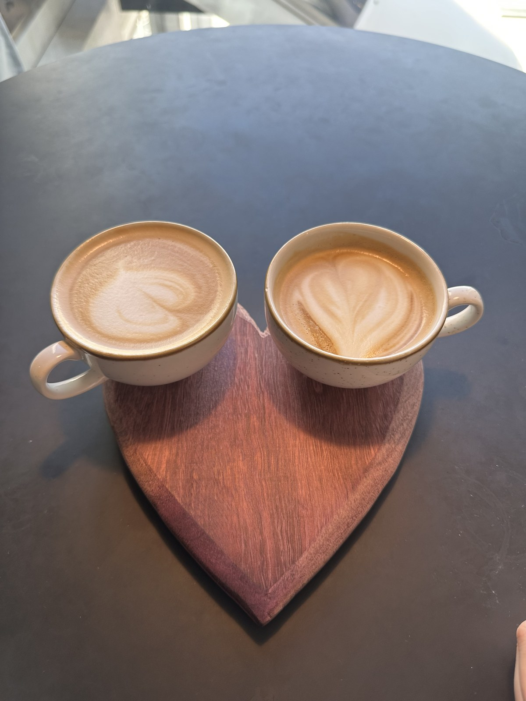
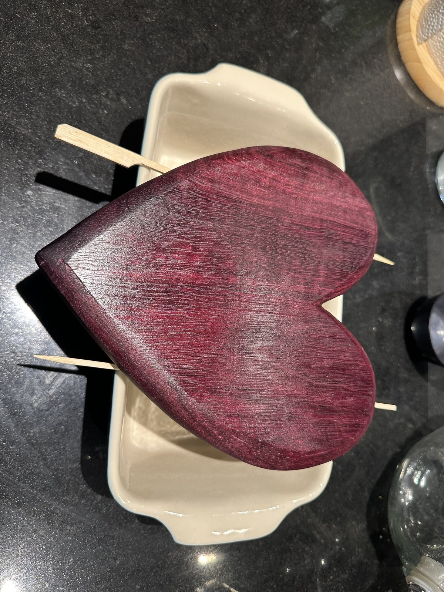

Projekt 03 • Skulpturales Handwerk & Thermische Oxidation
Massives Amaranth Herz-Servierbrett
Ein 25 cm × 15 cm grosses herzförmiges Servierbrett, gearbeitet aus einer monolithischen Massivholzbohle aus Amaranth / Purpleheart (Peltogyne). Mit am Frästisch kurvengefrästen Kantenprofilen, einer Ofen-Hitzebehandlung bei 120 °C–150 °C zur Entfaltung elektrisierender Violetttöne und einem samtigen Holz-Butter-Finish auf Bienenwachsbasis.
Herzsilhouette mit fliessenden organischen Konturen
Kantenbearbeitung
Stark verrundetes Kantenprofil, am Frästisch gefräst und von Hand feingeschliffen
Thermische Farbaktivierung
Im Ofen bei 120 °C – 150 °C für bis zu 60 Minuten getempert, um die fotochemische Pigmentoxidation im Holz anzuregen
Oberflächenbehandlung
Schweizer Holz-Butter (100 % natürliches Bio-Bienenwachs und pflanzliche Öle)
Bestimmung
Handgefertigte Käseplatte, Charcuterie-Servierbrett und dekoratives Herzstück
Werkstatt-Standort
Zürich, Schweiz
Thermische Oxidation & Bienenwachs-Transformation
Roh gefrästes Holz vs. Ofenaktivierung & Holz-Butter
Ziehen Sie den Schieber in der Mitte, um zu sehen, wie das Tempern zwischen 120 °C und 150 °C mit anschliessender Bienenwachs-Holzbutter das blasse Fliederholz in ein tiefes, königliches Wein-Violett verwandelt.

Roh gefräst & geschliffen140 °C Ofen + Holz-Butter
Werkstatt-Prozess
Der vollständige Baubericht
Vom dichten exotischen Hartholzblock zum skulpturalen, thermisch aktivierten Erbstück.
Schritt 01Holzauswahl & Grobzuschnitt
Auswahl des Massivholzstücks & Bandsägenschnitt
Anders als bei verleimten Schneidebrettern steht bei diesem Projekt die unverfälschte Schönheit eines einzigen massiven Holzstücks im Mittelpunkt. Ein fehlerfreier, 25 cm × 15 cm grosser Abschnitt aus kammergetrocknetem mittel-/südamerikanischem Amaranth (Peltogyne) wurde wegen seines dichten, astfreien Kernholzes ausgewählt. Die Herzsilhouette wurde mit harmonisch geschwungenen Kurven aufgezeichnet und anschliessend auf der Bandsäge knapp an der Risslinie ausgesägt, um eine saubere Kante für das Fräsen zu erhalten.
Roher Amaranth-Rohling nach dem Konturschnitt an der Bandsäge auf der Werkbank.Klicken zum Vergrössern
Nahaufnahme des durchgehenden Faserverlaufs, der ununterbrochen über beide Herzhälften fliesst.Klicken zum Vergrössern
Schritt 02Formgebung am Frästisch
Geschwungene Kanten am Frästisch anfräsen
Ein Servierbrett muss einladend und handschmeichelnd in den Händen liegen. Um harte Kanten zu beseitigen, wurde das Werkstück am Frästisch bearbeitet. Mit einem anlaufringgeführten Abrundfräser mit grossem Radius wurden fliessende Radien entlang der gesamten oberen und unteren Kante angefräst. Die innere Herzkehle und die feine untere Spitze erforderten behutsames Gegenlauffräsen in mehreren feinen Durchgängen, um Ausrisse an den dichten, 2'520 Janka harten Fasern des Amaranths zu vermeiden. Anschliessend wurden die Rundungen mit flexiblen Schleifvliesen und -pads über Körnung 120, 180, 240 und 320 von Hand verblendet.
Gefräste und von Hand verblendete Kantenrundung. Die weichen Konturen lassen Lichtreflexe sanft verlaufen.Klicken zum Vergrössern
Frässicherheit & Brandspuren am Hirnholz vermeiden
Da Amaranth natürliche Harze enthält und extrem dicht gewachsen ist, neigt es an den Hirnholzbereichen zu Brandspuren, wenn der Fräser auch nur einen Sekundenbruchteil verharrt. Eine moderate Drehzahl am Frästisch (ca. 16'000 U/min) bei zügigem, gleichmässigem Vorschub verhindert Verbrennungen und liefert eine spiegelglatte Holzoberfläche.
Schritt 03Thermische Farbaktivierung
Das Geheimnis im Ofen: 120 °C–150 °C für bis zu 60 Minuten
Frisch geschnittenes und geschliffenes Amaranthholz wirkt überraschend unscheinbar: ein stumpfes Graubraun mit dezentem Fliederschleier. Üblicherweise warten Holzwerker Wochen oder Monate im direkten Sonnenlicht, bis UV-Strahlung das Holz langsam violett färbt.
Um sofort das tiefste, intensivste Violett zu wecken, kam das feingeschliffene Brett in den vorgeheizten Ofen bei 120 °C bis 150 °C für ca. 45 bis 60 Minuten. Die sanfte trockene Hitze beschleunigt die fotochemische Oxidation der Peltogynol-Pigmente in den Holzfasern dramatisch, ohne die Zellstruktur anzukohlen. Während die Wärme das Massivholz durchdringt, erstrahlt das gesamte Brett in einem atemberaubenden, elektrisierenden Magenta-Violett!
Nach dem Ofengang: Durch die thermische Aktivierung blühen die violetten Farbpigmente vollflächig auf.Klicken zum Vergrössern
Die Chemie der thermischen Oxidation in Peltogyne
Amaranth enthält spezielle Polyphenolverbindungen (Peltogynoide). Hitze treibt Restfeuchte aus und regt die oxidative Kupplung dieser Flavonoide an. Indem die Temperatur sicher unter 160 °C gehalten wird, wird ein Verfärben ins Dunkelbraun verhindert und der königliche Violettzustand dauerhaft fixiert.
Schritt 04Natürliche Versiegelung
Veredelung mit Schweizer Bienenwachs-Holz-Butter
Noch ofenwarm wurde das Brett grosszügig mit natürlicher Schweizer Holz-Butter behandelt (eine lebensmittelechte Komposition aus Bio-Bienenwachs und pharmazeutisch reinen pflanzlichen Ölen). Durch die Resthitze des Holzes verflüssigte sich das Wachs und drang tief in die geöffneten Holzporen ein. Mit einem weichen, fusselfreien Baumwolltuch wurde der Balsam in kreisenden Bewegungen einmassiert – das nährt das Holz bis in die Tiefe und schützt die thermisch geweckte violette Pracht.

Einpolieren der Holz-Butter von Hand. Das Bienenwachs schafft eine samtige, lebensmittelechte Schutzschicht.Klicken zum Vergrössern
Schritt 05Das vollendete Meisterstück
Das fertige Servierbrett-Erbstück
Nach 24 Stunden Einwirkzeit des Bienenwachses und einem abschliessenden Aufpolieren mit einem weichen Flanelltuch offenbart das vollendete Herzbrett eine überwältigende Farbtiefe: ein sattes, königliches Wein-Violett, das je nach Lichteinfall schimmert. Die stark verrundete Kante liegt wunderbar schmeichelnd in der Hand – ein perfektes Prunkstück für edlen Käse, Früchte und feine Charcuterie.
Das vollendete Werk: Tiefviolett schimmerndes Herzbrett, bereit für den kulinarischen Einsatz.Klicken zum Vergrössern
Werkstatt-Archiv
Vollständige Projektgalerie
Klicken Sie auf ein beliebiges Foto, um hochauflösende Details in der Lightbox zu betrachten.